This project takes a cloud-hosted task management web application and releases it through an Agile-governed, automated pipeline on Amazon Web Services (AWS). Instead of pushing code straight to one server, the work is split into a Development environment and a Production environment controlled by the develop and main Git branches, so every change is tested before it reaches users.
The application is a Node.js and Express service running on Amazon EC2, integrated with eight AWS capabilities: EC2 for compute, a shell-based deployment pipeline, S3 for backups, DynamoDB for persistence, Systems Manager Parameter Store for configuration, IAM for keyless security, CloudWatch with SNS for monitoring and alerts, and Lambda with EventBridge for serverless scheduled maintenance.
This report presents the final status of the project. All planned work is complete: both environments are deployed, the release script is automated, data is persisted and backed up in the cloud, monitoring is active, and the application is running and reachable. The project is 100% complete.
| Objective | Outcome | Status |
|---|---|---|
| Separate Dev and Prod environments | dev-server runs the develop branch and prod-server runs the main branch on two EC2 instances. |
Achieved |
| Automate releases | deploy.sh pulls the branch, installs dependencies and restarts the app with one command. |
Achieved |
| Persist data in the cloud | Tasks are stored in a DynamoDB table in real time. | Achieved |
| Back up data | A timestamped JSON backup is written to S3 on every change. | Achieved |
| Centralise configuration | The server reads its settings from SSM Parameter Store. | Achieved |
| Secure access without keys | EC2 uses an IAM role with temporary STS credentials. | Achieved |
| Monitor and alert | A CloudWatch alarm on prod CPU above 70% emails the engineer through SNS. | Achieved |
| Automate maintenance | Lambda, triggered nightly by EventBridge, purges completed tasks. | Achieved |
| Layer | Technology |
|---|---|
| Application | Node.js, Express, AWS SDK v3, HTML/CSS/JavaScript front end |
| Compute | Amazon EC2 (Ubuntu, t2.micro), two instances |
| Storage and database | Amazon S3 (backups), Amazon DynamoDB (on-demand capacity) |
| Configuration and security | AWS Systems Manager Parameter Store, AWS IAM role with STS credentials |
| Monitoring | Amazon CloudWatch alarm, Amazon SNS email notification |
| Automation | Shell script deploy.sh, AWS Lambda (Node.js), Amazon EventBridge cron rule |
| Process and version control | Git, GitHub, Agile Scrum with Sprint 2 backlog |
Users reach the web application over HTTP on port 3000 of an EC2 instance. The Express server serves the user interface and exposes a REST API for tasks, health checks, backups and the Lambda cleanup trigger. It uses the AWS SDK v3 to talk to S3, DynamoDB and SSM, authenticating through the IAM role attached to the instance. The developer pushes code to GitHub; the develop and main branches are deployed to dev-server and prod-server with deploy.sh. Monitoring and the nightly cleanup run alongside the application in the AWS Sydney region (ap-southeast-2).
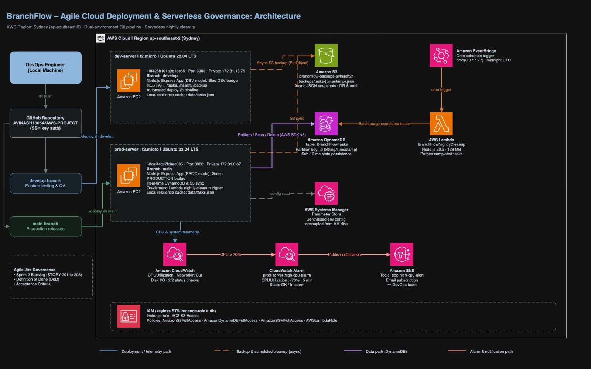
data/tasks.json, which gives instant offline resilience.PutItem request stores the task in the DynamoDB table in real time.PutObject request writes a timestamped JSON backup file to the S3 bucket.Development follows Scrum. Each feature starts as a user story, is built on a feature branch, merged into develop and tested on the Dev EC2 instance. After the sprint review and QA pass, the change is merged into main and deployed to the Production EC2 instance. This keeps experimental code away from end users.
| Story | Description | Status |
|---|---|---|
| STORY-201 | S3 cloud backup engine | Done |
| STORY-202 | Zero-downtime release script (deploy.sh) |
Done |
| STORY-203 | CloudWatch CPU alarm with SNS email alerts | Done |
| STORY-204 | Dev and Production environment badge | Done |
| STORY-205 | Keyless IAM role security | Done |
| STORY-206 | Real-time DynamoDB synchronisation | Done |
| STORY-207 | SSM Parameter Store configuration | Done |
| STORY-208 | Lambda and EventBridge nightly cleanup | Done |
A release is one command, ./deploy.sh <branch>, where the branch is develop or main. The script performs these steps:
git fetch and git reset --hard to the chosen branch, which avoids merge conflicts on the server.npm install --production to update dependencies.nohup, so the app keeps running after the SSH session closes.deploy.log as an audit trail.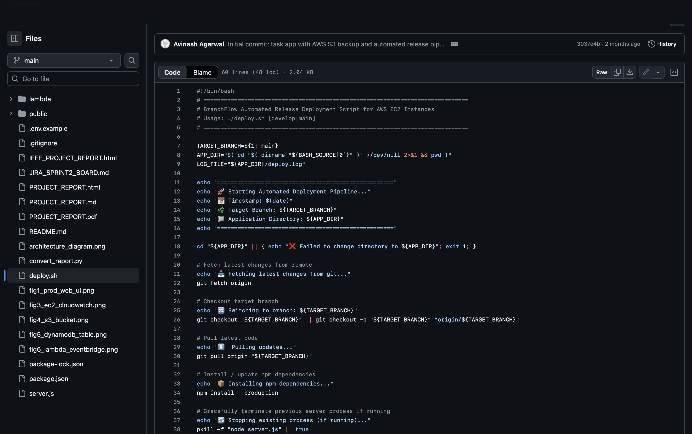
Two t2.micro Ubuntu instances run in the Sydney region: dev-server for the develop branch and prod-server for the main branch. The security group allows port 22 for SSH administration with a key pair and port 3000 for application traffic. All other ports are closed.
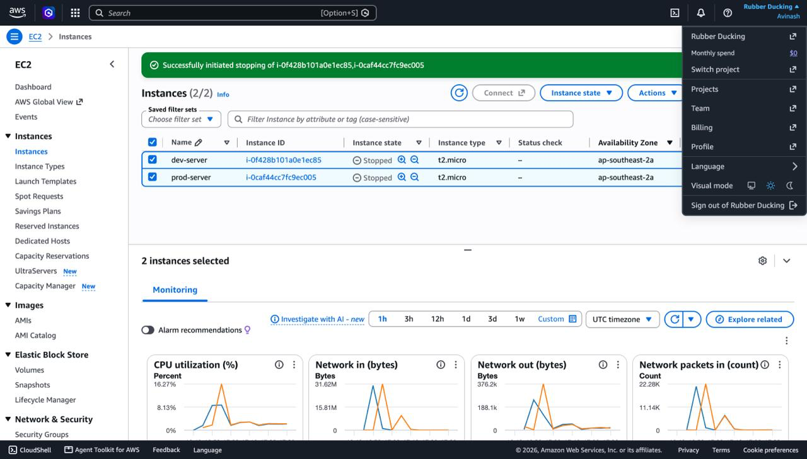
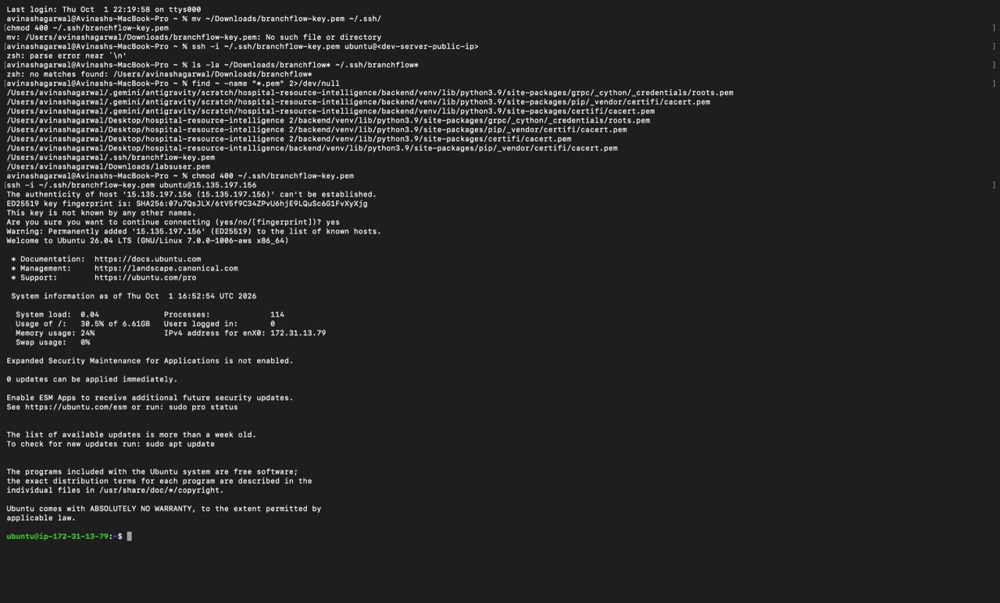
A DynamoDB table with the partition key id (String) stores all tasks. It uses on-demand capacity, so there is no capacity planning, patching or cluster management. Keeping data in a managed service separates storage from compute and avoids a single point of failure on the EC2 instance.
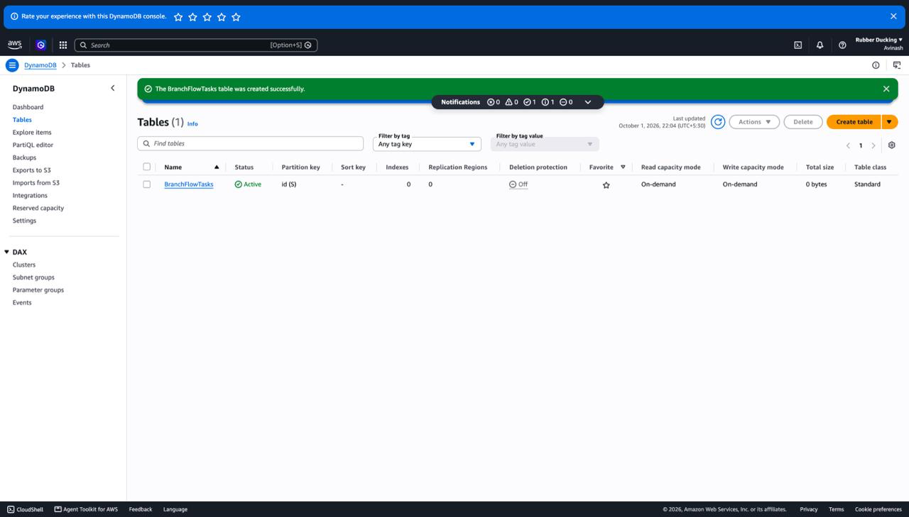
A bucket in the Sydney region stores a timestamped JSON snapshot of the task list each time a task is added, updated or deleted. Objects are never overwritten, so any earlier state can be restored. S3 offers 99.999999999% durability, which supports disaster recovery.
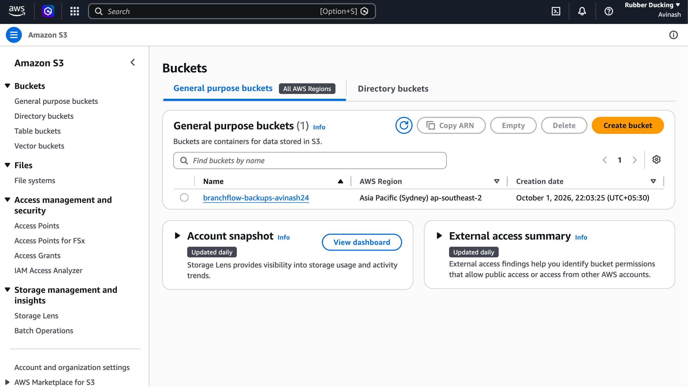
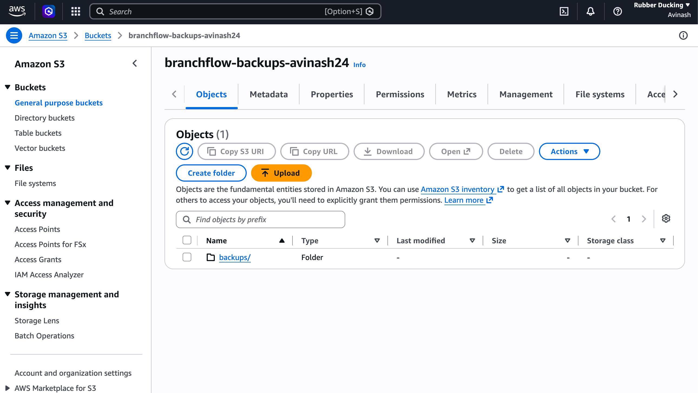
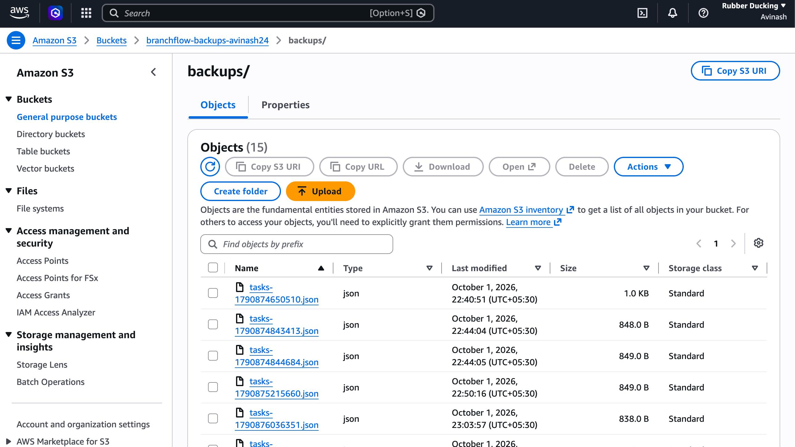
A Node.js Lambda function (128 MB memory) scans DynamoDB for completed tasks and deletes them in batches. An EventBridge schedule rule with the expression cron(0 0 * * ? *) invokes it every day at midnight UTC. Running the cleanup serverless means no always-on server is needed, and the cost stays within the free tier.
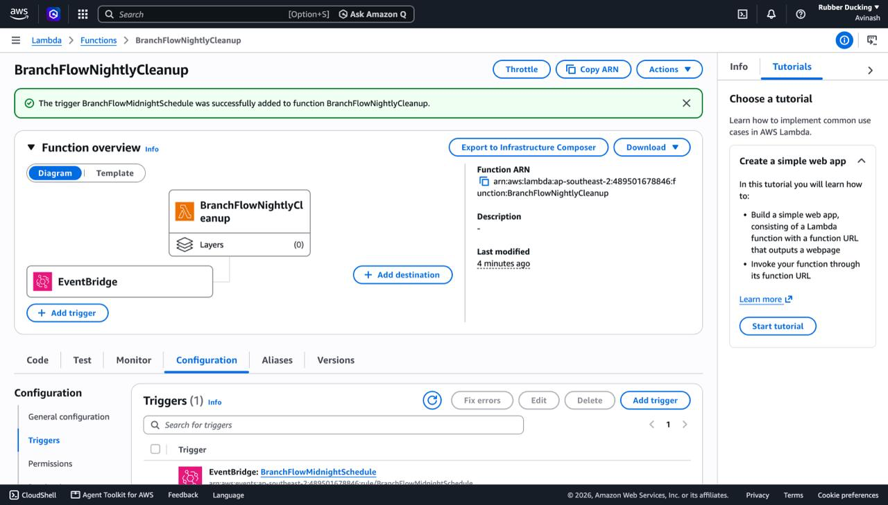
IAM role: the instances use the EC2-S3-Access role, which carries the S3, DynamoDB, SSM and Lambda policies the app needs and provides temporary STS credentials through instance metadata. No access key or secret key is stored in the code or in GitHub.
SSM Parameter Store: environment settings are read from a central store rather than hardcoded, so configuration can change without redeploying code or logging into the server.
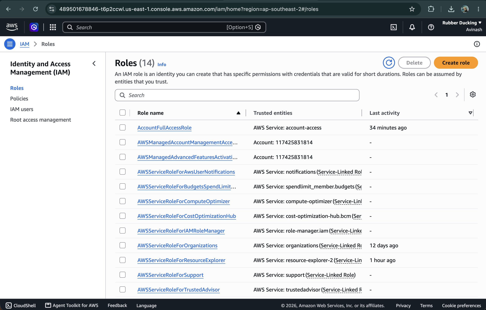
The alarm prod-server-high-cpu-alarm watches the CPUUtilization metric (AWS/EC2 namespace, average statistic) of the production instance. When the CPU goes above 70% within a 5-minute period, the alarm publishes to the SNS topic ec2-high-cpu-alert, whose email subscription notifies the engineer before users are affected. The figure shows the alarm in its normal OK state with actions enabled.
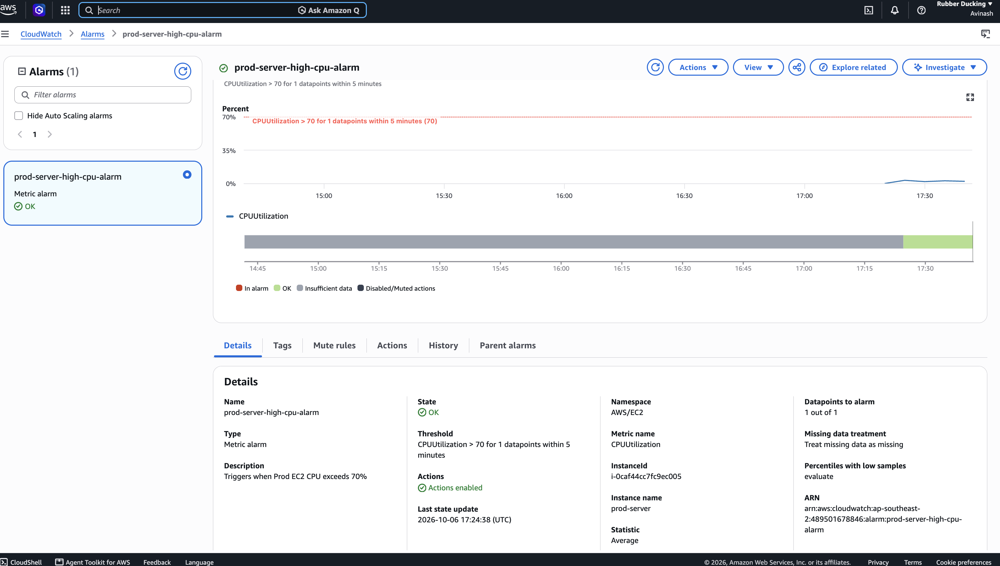
The web application shows its environment (PRODUCTION or DEV) in the header, with live status badges for S3, DynamoDB, SSM and Lambda. Users add tasks with a category and priority; each change is synced to DynamoDB and backed up to S3. A Manual S3 Backup button and a Run Lambda Nightly Cleanup button are included for demonstration.
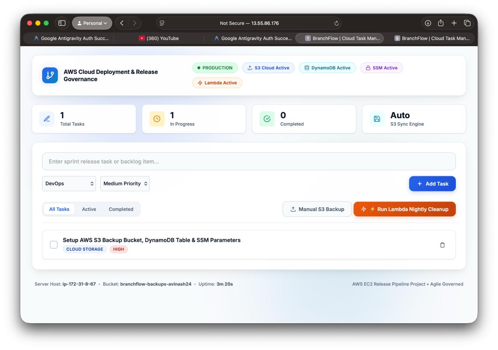
| Challenge | Cause | Resolution |
|---|---|---|
| SSH access failure | The key pair was not in the expected folder and its permissions were too open. | Moved the key to ~/.ssh and restricted it with chmod 400. |
| Changing public IP | AWS releases the dynamic public IPv4 address when an instance is stopped. | Use the new address after restart; plan an Elastic IP or a load balancer with Route 53 for production. |
| Cloud service outage risk | S3 or DynamoDB calls can fail if AWS is unreachable. | Wrapped cloud calls in error handling and fall back to local tasks.json storage. |
| Credential exposure risk | Access keys in code can leak through a repository. | Attached an IAM role with STS credentials and moved settings to SSM. |
| Database bloat | Completed tasks accumulate and raise storage and read costs. | Added a Lambda cleanup job scheduled nightly by EventBridge. |
| Work Area | Completion | Outcome |
|---|---|---|
| Application | 100% | Node.js and Express app serving the web UI and REST API |
| Environment separation | 100% | Dev and Prod EC2 instances tied to develop and main |
| Deployment automation | 100% | One-command release with deploy.sh and audit log |
| Data persistence and backup | 100% | DynamoDB storage and timestamped S3 backups |
| Security and configuration | 100% | Keyless IAM role and SSM Parameter Store |
| Monitoring and alerting | 100% | CloudWatch CPU alarm with SNS email |
| Serverless automation | 100% | Lambda cleanup triggered nightly by EventBridge |
| Documentation and presentation | 100% | Report and presentation complete |
| Overall | 100% | Project complete |
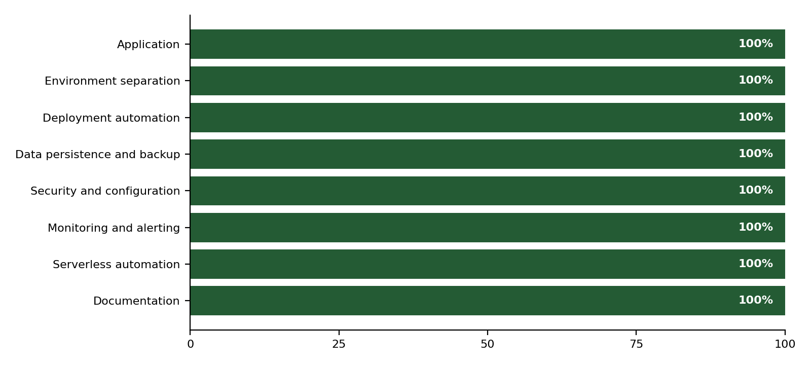
The project demonstrates end-to-end cloud engineering: Git branch governance, automated EC2 deployment, and integration of eight AWS capabilities for persistence, security, monitoring and serverless automation. All objectives were achieved, both environments are running, and the source code is available in the GitHub repository.